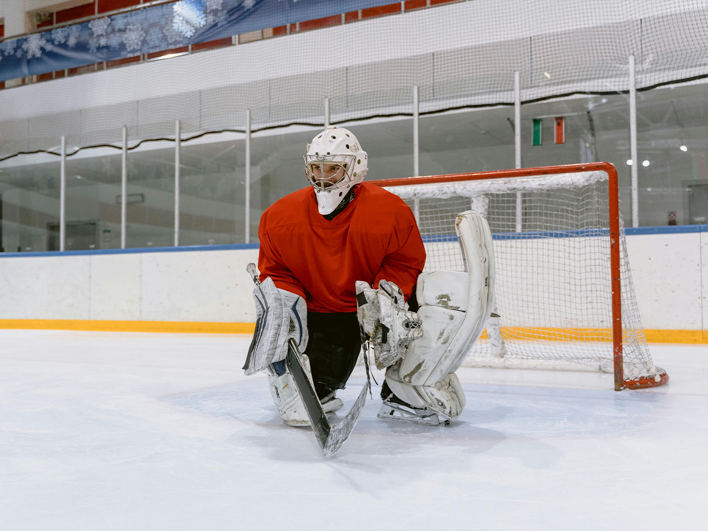

GrecsGoalers wants to empower goaltenders of all ages and skill levels to reach their full potential. With a huge variety of custom and specialized gear, we work to ensure all goalies from Butterfly to Hybrid get the most quality, comfort, and safety from their pads and equipment so all you have to worry about is keeping the puck out of the net!
We want to set the standard in the Hockey community for Goaltender gear and equipment. We aim to be recognized as one of, if not the most trusted source for aspiring and professional goalies around the world. Through best-in-class gear and customer service, we aspire for every goalie to come to Grecs for their needs on the ice.
GrecsGoalers was founded by Nicholas Greco, a lifelong goalie and hockey fan. The early idea of the brand traces back to Nicholas' personal experiences growing up in the world of ice hockey. As a goalie, he faced challenges in finding high-quality affordable gear in local stores.
Motivated by the scarcity of equipment and the financial constraints faced by many goaltenders, Greco embarked on a mission to address these issues. He established GrecsGoalers with a clear vision and purpose. The brand's primary objective was to create an exclusive environment tailored specifically for goalies, offering a diverse range of gear to cater to the unique needs of individuals across various age groups and skill levels.
GrecsGoalers was built as a solution to the challenges Greco encountered during his own journey as a goalie. The brand aimed to eliminate the struggle goalies faced in accessing suitable equipment by providing a comprehensive selection of gear. This selection includes products of different types and sizes, ensuring that goalies of all ages and skill levels can find the perfect fit for their specific requirements.
GrecsGoalers took a customer first approach by introducing flexible pricing strategies. Greco envisioned a brand that not only offered top-notch goalie equipment but also made it accessible to a broader range of individuals, irrespective of their budget constraints.
GrecsGoalers was founded by Nicholas Greco, a lifelong goalie and hockey fan. The early idea of the brand traces back to Nicholas' personal experiences growing up in the world of ice hockey. As a goalie, he faced challenges in finding high-quality affordable gear in local stores.
Motivated by the scarcity of equipment and the financial constraints faced by many goaltenders, Greco embarked on a mission to address these issues. He established GrecsGoalers with a clear vision and purpose. The brand's primary objective was to create an exclusive environment tailored specifically for goalies, offering a diverse range of gear to cater to the unique needs of individuals across various age groups and skill levels.
GrecsGoalers was built as a solution to the challenges Greco encountered during his own journey as a goalie. The brand aimed to eliminate the struggle goalies faced in accessing suitable equipment by providing a comprehensive selection of gear. This selection includes products of different types and sizes, ensuring that goalies of all ages and skill levels can find the perfect fit for their specific requirements.
GrecsGoalers took a customer first approach by introducing flexible pricing strategies. Greco envisioned a brand that not only offered top-notch goalie equipment but also made it accessible to a broader range of individuals, irrespective of their budget constraints.